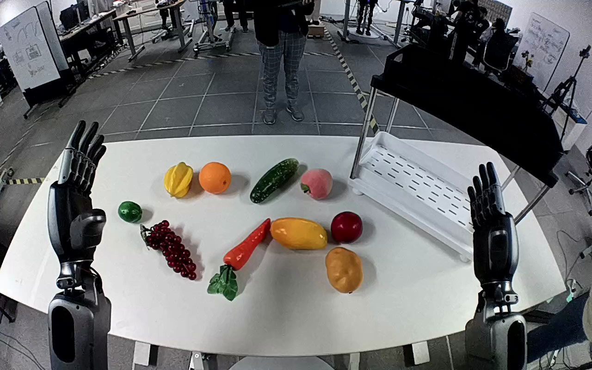

NVIDIA GR1 · 71
Video 71

Visual review action_review.json
{
"prompt_protocol": "humanoid_action_v1",
"prompt_provenance": "visually_authored_from_video_and_initial_frame",
"reviewed_contact_sheets": [
"sheet_001.jpg"
],
"inspected_frame_stride": 2,
"inspected_sampled_frame_count": 60,
"initial_scene": "Robot-facing-table view shows both forearms and open dexterous hands extending from the lower corners. A tan oval potato lies near the front center of the white table, below a red round object and yellow elongated object. An empty lower white perforated shelf tray is to the robot’s right.",
"observed_sequence": [
{
"source_frame_interval": [
0,
28
],
"observation": "Both hands are raised open; the potato remains on the tabletop. The left hand stays in this position throughout.",
"confidence": "high"
},
{
"source_frame_interval": [
29,
70
],
"observation": "The right arm moves inward and down toward the tan potato, with thumb and fingers open on opposing sides. By frame 70 the fingers are alongside the potato.",
"confidence": "high"
},
{
"source_frame_interval": [
71,
84
],
"observation": "The right thumb and fingers close around the potato; the potato is visibly secured between them by frame 82.",
"confidence": "high"
},
{
"source_frame_interval": [
85,
100
],
"observation": "The right hand lifts the potato clear of the tabletop and carries it rightward toward the lower white tray.",
"confidence": "high"
},
{
"source_frame_interval": [
101,
113
],
"observation": "The right hand transports the held potato over the lower white shelf tray and lowers it inside its perimeter.",
"confidence": "high"
},
{
"source_frame_interval": [
114,
119
],
"observation": "The right fingers open; the potato moves downward inside the tray and remains beneath the open thumb/fingers at the ending. The right hand remains over it; a subsequent withdrawal is not shown.",
"confidence": "high"
}
],
"arm_hand_roles": {
"right": "Active throughout the manipulation: grasps the potato, lifts and transports it, lowers it inside the lower tray, and opens to release.",
"left": "Remains raised open beside the table; does not grasp, support, transfer, or contact the potato or shelf.",
"coordination": "Single-hand manipulation. No hand-to-hand transfer or assisting contact; the visible person does not participate."
},
"anatomical_side_evidence": {
"evidence": "The camera looks forward from behind/above the paired forearms toward the table. The active forearm enters from the robot’s right lower side. The mirrored thumb anatomy corroborates the assignment: the right-hand thumb projects inward toward image left, while the left-hand thumb projects inward toward image right in the source PNG. This agrees with the original right-hand annotation.",
"confidence": "high",
"uncertainty": "Shoulder attachments and torso are outside the image, but paired forearm orientation and mirrored thumb anatomy establish the side."
},
"evidence_frame_indices": [
0,
54,
70,
82,
92,
108,
114,
116,
118,
119
],
"inspection_coverage": {
"contact_sheet_frames": "Every second decoded frame, 0 through 118 inclusive, visually inspected in sheet_001.jpg.",
"native_resolution_frames": [
54,
70,
82,
92,
108,
114,
116,
118,
119
],
"initial_png_inspected_at_native_resolution": true,
"final_frame_inspected_at_native_resolution": true
},
"selected_execution_status": "success",
"terminal_state": "The potato has been released downward inside the lower white tray. The right hand is open above it and the left hand remains raised open. The fingers partly occlude the final potato/tray contact; later settling and hand withdrawal are not visible.",
"uncertainties": [
"The open right thumb partly occludes the final potato/tray contact; the exact resting orientation and later settling after release are not visible."
],
"annotation_discrepancies": [],
"outcome": "Observed grasp, transfer into the intended lower tray, and finger opening/release. Success refers to the visible transfer and release, without claiming later settling or withdrawal.",
"video_id": "71",
"dataset": "NVIDIA_GR1_100",
"dedicated_review_agent": "review_gr1_71",
"review_source_video": "NVIDIA_GR1_100/71/original/original.mp4",
"source_frame_count": 120,
"source_fps": 20.0,
"native_detail_frames": [
54,
70,
82,
92,
108,
114,
116,
118,
119
],
"world_model_prompt": "The humanoid uses its right hand to grasp the tan potato near the front center of the table between its thumb and fingers, then lifts it. It carries the potato to the lower white shelf tray, lowers it inside, and opens its fingers to release it, with the right hand remaining above the potato. Keep the camera fixed; preserve robot geometry, physically valid joint motion, and normal gripper opening and closing.",
"original_task_instruction": "Use the right hand to pick up tan potato from center of table to lower white tray of plastic shelf.",
"selected_segment": {
"start_frame": 0,
"end_frame_exclusive": 120,
"reason": "Complete original single-task reference; no cropping or trimming requested."
},
"source_video_sha256": "86e35ef11daf2de8e4d8b5cd9bd65101fa912094cea736181d2acf2b3e2d4aac",
"review_completed_at": "2026-10-13T18:29:22.778203+00:00"
}